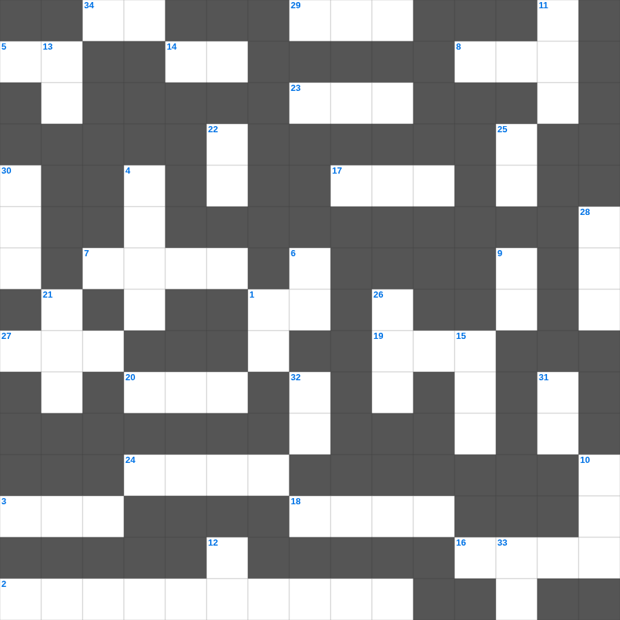

요엘: 보충 단어
📌 서비스 정의
십자가로세로는 교회 주보와 주일학교에서 사용할 수 있는 성경 기반 가로세로 퍼즐 서비스입니다. 성경 인물, 사건, 핵심 구절을 바탕으로 제작되었습니다. 온라인 풀이 및 인쇄 기능을 제공합니다.
요엘를 주제로 한 요엘 성경퀴즈입니다. 35개의 단어를 맞춰보세요! 가로세로 낱말 퍼즐 형식으로 요엘의 핵심 내용을 재미있게 복습할 수 있습니다.

📝 가로 힌트
1. 다윗이 왕이 되기 전의 직업
2. 벽에 나타난 글자를 해석한 다니엘
3. 이스라엘의 유일한 여성 사사
5. 지성소와 성소를 나누는 두꺼운 천
7. 노동자 하루 품삯에 해당하는 은화
8. 두 번째 재앙: 온 땅에 올라온 동물
14. 이것하는 자는 복이 있나니 저희가 위로를 받을 것임
16. 베드로가 밤새 그물을 던졌으나 잡지 못했을 때 하신 일
17. 베드로가 고기를 잡던 호수
18. 이스라엘의 수도이자 거룩한 성
19. 이사악의 아내
20. 예수님이 자라나신 동네
23. 성경의 맨 처음 책
24. 솔로몬의 일천 번제
27. 대제사장의 흉패에 박힌 열두 보석 중 하나
29. 노아의 방주에 비가 내린 일수
34. 쓴 물이 단물로 변한 곳
📝 세로 힌트
1. 친구를 위하여 자기 이것을 버리면 이보다 큰 사랑이 없음
4. 생명수 강가에 있는 이것
6. 너희가 서로 사랑하면 모든 사람이 너희가 내 이것인 줄 알리라
9. 일곱째 날에 하나님이 하신 일
10. 여덟 번째 재앙: 모든 채소를 먹어치움
11. 이스라엘 백성이 요단강을 건너 처음 도착한 성
12. 성전 세로 바쳤던 은화
13. 양 떼를 치는 감독자
15. 심령이 이것한 자는 복이 있나니
21. 모세가 가나안 땅을 바라본 산
22. 제물을 통째로 태워 드리는 제사
25. 새 예루살렘 성곽의 첫 번째 기초석
26. 성경 인물 중 가장 키가 큰 사람은?
28. 함께 가져온 물고기의 마리 수
30. 나일강이 피로 변한 첫 번째 재앙
31. 안식일을 기억하여 이것하게 지키라
32. 믿음은 바라는 것들의 이것
33. 다윗이 골리앗을 쓰러뜨린 무기
🧑🏫 교회 교육 자료 활용
이 퍼즐은 주일학교 교재 추천 자료로 활용할 수 있고, 주일학교 주보에 넣기 좋은 분량으로 구성되어 있습니다. 수업용 주일학교 교안에 활동지로 붙이거나, 예배 후 복습용 주일학교 공과교재로 바로 사용할 수 있습니다.
🏷️ 키워드
요엘 성경퀴즈, 요엘, 십자가로세로, 성경퀴즈, 말씀퀴즈, 가로세로퍼즐, 주일학교 교재 추천, 주일학교 주보, 주일학교 교안, 주일학교 공과교재